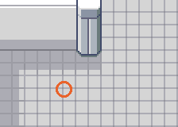

PokémonEMMA'S EMERALD
OFFICIAL Strategy Guide
Weather Institute: where are they?
TIP
No wild Pokémon in the grass here. Time of day: M = morning (6–10), D = day (10–19), E = evening (19–20), N = night (20–6).
Event 1: Abnormal weather

The scientist on the ground floor reports unusual weather: heavy rain on a sea route (105, 125, 127 or 129) means the Marine Cave and Kyogre; harsh sunlight on a land route (114, 115, 116 or 118) means the Terra Cave and Groudon. Only one is active at a time and it moves after a while, so go straight there.
Trainers
| AHorizon GRUNT: Zubat LV27Poison; Poochyena LV27Dark |
| BHorizon GRUNT: Carvanha LV28WaterDark |
61